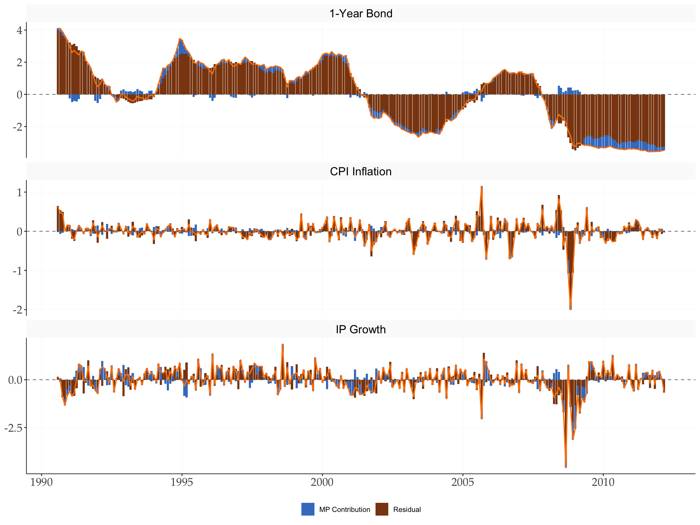
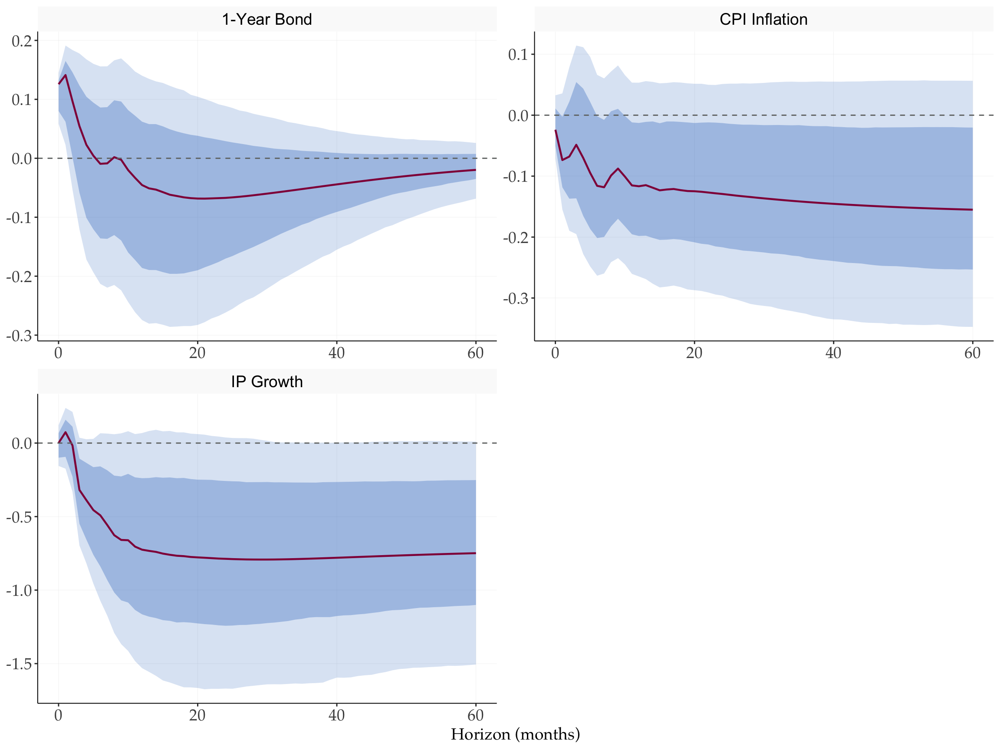
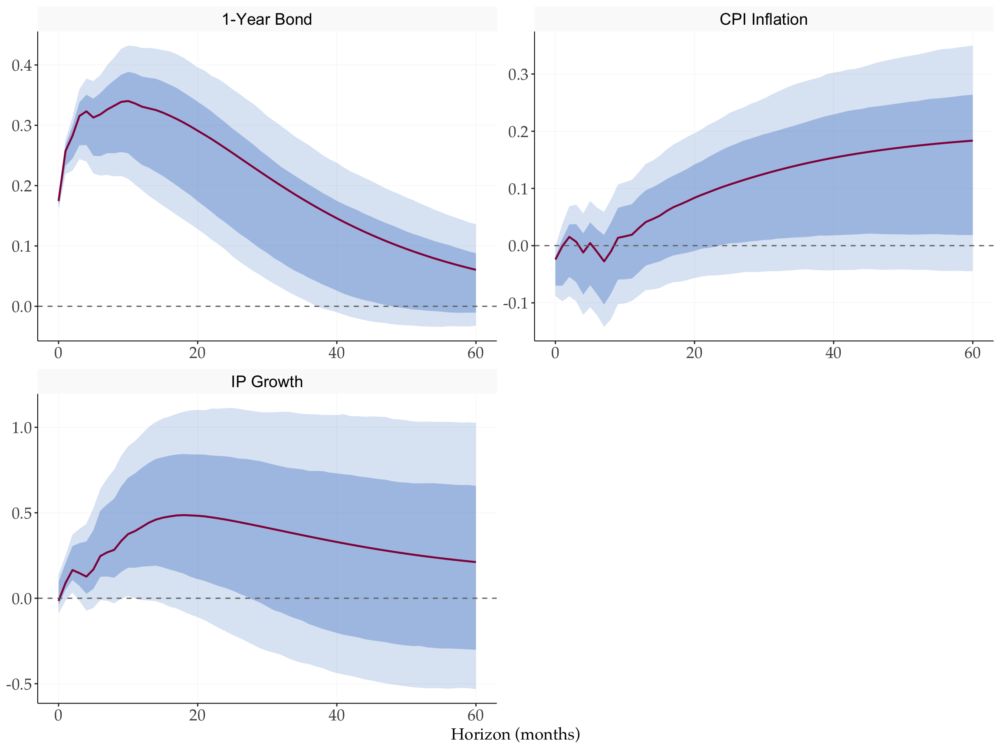
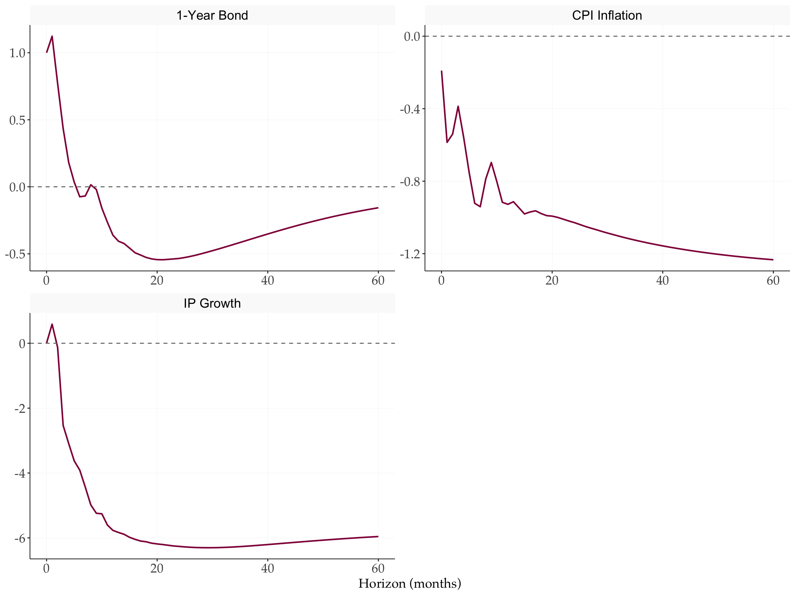
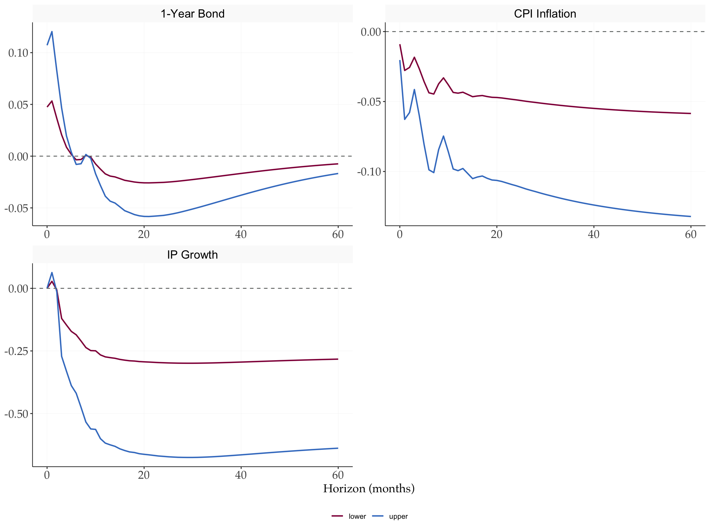

library(tidyverse)
library(tidyMacro)
set.seed(12345)
set_theme(ftheme_tidyMacro())External instrument SVAR analysis for noninvertible shocks
1 Overview
This document illustrates the usage of the Generalized SVAR-IV procedure proposed by Forni et al. (2022) . I use example data set from Gertler and Karadi (2015) with three variables and a high frequency instrument. We have three cases at hand:
- Invertibility / Fundamentalness: the shock is a linear combination of present VAR residuals \(\Rightarrow\) can recover IRFs, shock, FEVD, HD.
- Non-invertibility, but Recoverability: the shock is a linear combination of (past), present and future VAR residuals \(\Rightarrow\) can recover IRFs, shock, HD, and FEVD by spectral methods.
- Non-recoverability: we can only obtain relative IRFs (some response scaled, usually to 1); no shock, no HD.
These three cases give rise to the following empirical procedure:
- Regress the instrument onto its own lags and the lags of other variables. Obtain the cleaned instrument as the residual of this regression.
- Estimate a reduced-form VAR and obtain the residuals.
- Test for invertibility by running the OLS regression \[z_1(t) = c + \delta(F)\hat{e}(t) + u(t),\] i.e. regress the instrument onto the current and future values of the residuals. Use an F-test to check \(\delta_1 = \delta_2 = \cdots = 0\). If we reject the Null of invertibility, proceed to next step. Otherwise, use the normal SVAR-IV procedure to obtain IRFs, FEVD, HD
- If we reject invertibility, test for recoverability using an autocorrelation test (e.g. Ljung-Box). Compute the fitted values from the regression in step 3 and check whether the resulting time series is autocorrelated. The null is zero autocorrelation (recoverable shock); the alternative is autocorrelation (non-recoverable shock).
- If the shock is non-recoverable, use the usual procedure to obtain relative IRFs and derive lower and upper bounds for the absolute IRFs.
2 Setup
3 Helper Functions
# Clean the instrument: regress on own lags and lags of X, return residuals.
clean_instrument <- function(instr, p, X) {
T0 <- nrow(X)
z0 <- as.matrix(instr[(p + 1):T0])
lag_i <- flagmakerMatrix(as.matrix(instr), p)
lag_X <- flagmakerMatrix(X, p)
as.vector(fOLS(y = z0, X = cbind(lag_i, lag_X), c = 1L)$err)
}4 Data
load(here::here("data", "GK2015.rda"))
instr <- GK2015$instr # FF4 monetary policy surprises (T x 1)
X <- GK2015 |>
select(BY1, CPI_Inflation, IP_Growth) |>
as.matrix() # T x N macro variables
dates <- GK2015$Date # monthly, 1990-01-01 to 2012-06-01
T_full <- nrow(X)
N <- ncol(X)
varnames <- c("1-Year Bond", "CPI Inflation", "IP Growth")
shockname <- "MP Shock"5 Parameters
p <- 7L
c <- 1L
hor <- 60L
cumu <- c(2L, 3L) # cumulate CPI inflation and IP growth
r <- 3L # horizon for the invertibility test6 Step 1 — Clean the Instrument
Regress \(z_0(t)\) on its own lags and the lags of the VAR variables to remove predictable components.
z <- clean_instrument(instr, p, X)7 Step 2 — VAR Estimation
var_result <- fVAR(X, p, c)
eps <- var_result$residuals
Sigma <- cov(eps)
wold <- fwoldIRF(var_result, horizon = hor)
S <- t(chol(Sigma))
D <- fcholeskyIRF(wold, S) # N x N x (hor+1) Cholesky IRF array
T_eps <- nrow(eps) # = T_full - p8 Step 3 — F-test for Invertibility
Regress the cleaned instrument \(z_1(t)\) on current and \(r\) future VAR residuals. Test that the coefficients on future residuals are jointly zero (Null = invertible).
inv <- fTestInvertibility(z, eps, r)
cat(sprintf("F-stat: %.4f p-value: %.4f Instrument relevance (corr): %.4f\n", inv$F_stat, inv$pval, inv$instr_relev))
#> F-stat: 2.0637 p-value: 0.0334 Instrument relevance (corr): 0.3694A small p-value rejects invertibility — future residuals help predict the instrument.
9 Step 4 — Ljung-Box Test for Recoverability
Obtain the fitted value \(\hat{z}_1(t) = \hat{\delta}(F)\hat{e}(t)\) from the regression above and test for autocorrelation (Null = recoverability).
rec <- fTestRecoverability(inv$fit, lags = 2L)
cat(sprintf("Ljung-Box p-value (lag %d): %.4f\n", rec$lags, rec$pval))
#> Ljung-Box p-value (lag 2): 0.3039
# Extract downstream objects from the invertibility regression
delta <- inv$delta
fit <- inv$fit
vt <- inv$vtA large p-value: Not able to reject recoverability — we proceed under the recoverable case.
10 The Recoverable Case
10.1 (b) Structural Shock
The shock is \(\hat{\xi}(t) = \hat{z}_1(t) / a_1\) where \(a_1 = \text{sd}(\hat{z}_1(t))\).
a1 <- sd(fit)
mp_shock <- as.vector(fit) / a110.2 (a) Absolute IRFs
The absolute IRF is \(b(L) = C(L)\Psi(L) / a_2\) where \(\Psi(L)\) is obtained by regressing \(\hat{e}(t)\) onto current and past values of the instrument \(z_1(t)\).
# Regress eps(r+1:end) on [1, z(r+1:end), z_lag1, ..., z_lagr]
Z_psi <- cbind(1, tail(z, -r), flagmakerMatrix(as.matrix(z), r))
psi <- solve(crossprod(Z_psi), crossprod(Z_psi, eps[(r + 1):T_eps, ]))
# psi: (r+2) x N — row 1 is intercept, rows 2:(r+2) are psi_0,...,psi_r
# Build psiL (N x 1 x (r+1)) and scalar a2
psi_coefs <- psi[2:(r + 2L), ] # (r+1) x N
psiL <- array(t(psi_coefs), dim = c(N, 1L, r + 1L))
Sigma_inv <- solve(Sigma)
a2 <- sum(apply(psi_coefs, 1, function(p) drop(t(p) %*% Sigma_inv %*% p)))
gammaL <- fPolyConvolve(wold, psiL, hor + 1L) # N x 1 x (hor+1)
irf_mat <- gammaL[, 1, ] / sqrt(a2) # N x (hor+1)
irf_cumu <- irf_mat
for (v in cumu) irf_cumu[v, ] <- cumsum(irf_cumu[v, ])10.3 (c) Historical Decomposition
T_hd <- T_eps - r
wold_long <- fwoldIRF(var_result, horizon = T_hd)
gammaL_long <- fPolyConvolve(wold_long, psiL, T_hd) / sqrt(a2)
HD <- matrix(0, T_hd, N)
for (i in seq_len(N)) {
ga_i <- gammaL_long[i, 1, ]
for (t in seq_len(T_hd))
HD[t, i] <- sum(ga_i[seq_len(t)] * rev(mp_shock[seq_len(t)]))
}
dates_hd <- dates[(p + 1):(T_full - r)]ystar <- scale(X[(p + 1):(T_full - r), ], center = TRUE, scale = FALSE)
hd_tbl <- tibble(
date = rep(dates_hd, N),
variable = rep(varnames, each = length(dates_hd)),
hd = as.vector(HD),
actual = as.vector(ystar)
) |>
mutate(
variable = factor(variable, levels = varnames),
residual = actual - hd
)
bar_tbl <- hd_tbl |>
pivot_longer(c(hd, residual), names_to = "component", values_to = "value") |>
mutate(component = factor(component,
levels = c("hd", "residual"),
labels = c("MP Contribution", "Residual")))
ggplot() +
geom_col(data = bar_tbl,
aes(x = date, y = value, fill = component),
position = "stack", width = 28) +
geom_line(data = hd_tbl,
aes(x = date, y = actual), colour = tidyMacro_colors[4], linewidth = 0.7) +
geom_hline(yintercept = 0, linetype = "dashed", colour = "#707372", linewidth = 0.4) +
facet_wrap(~variable, scales = "free_y", ncol = 1) +
scale_fill_manual(values = c("MP Contribution" = tidyMacro_colors[3],
"Residual" = "#8B4513")) +
labs(x = NULL, y = NULL, fill = NULL) +
ftheme_tidyMacro()
10.4 (d) Spectral FEVD
bands <- rbind(c(2, 18), c(18, 96), c(96, 360))
band_labels <- c("Erratic (2–18m)", "Business cycle (18–96m)", "Long run (96–360m)")
gridpoints <- 128L
irf_s <- irf_mat # N x (hor+1), unit-variance MP shock IRF
fevd_fourier <- vapply(seq_len(nrow(bands)),
function(b) fSpectralFEVD(D, irf_s, bands[b, ], gridpoints, TRUE),
numeric(N))
fevd_linspace <- vapply(seq_len(nrow(bands)),
function(b) fSpectralFEVD(D, irf_s, bands[b, ], gridpoints, FALSE),
numeric(N))
colnames(fevd_fourier) <- colnames(fevd_linspace) <- band_labels
rownames(fevd_fourier) <- rownames(fevd_linspace) <- varnames
cat("Spectral FEVD (Fourier frequencies):\n"); print(round(fevd_fourier, 4))
#> Spectral FEVD (Fourier frequencies):
#> Erratic (2–18m) Business cycle (18–96m) Long run (96–360m)
#> 1-Year Bond 0.4479 0.0808 0.0251
#> CPI Inflation 0.0833 0.0620 0.1482
#> IP Growth 0.2936 0.2536 0.2747
cat("\nSpectral FEVD (linspace grid):\n"); print(round(fevd_linspace, 4))
#>
#> Spectral FEVD (linspace grid):
#> Erratic (2–18m) Business cycle (18–96m) Long run (96–360m)
#> 1-Year Bond 0.4254 0.0827 0.0268
#> CPI Inflation 0.0827 0.0623 0.1423
#> IP Growth 0.2941 0.2533 0.268710.5 Bootstrap IRFs — Recoverable Case
nboot <- 2000L
boot_rec <- fBootstrapIVRecover(
y = X,
instr = as.numeric(instr),
var_result = var_result,
noise = as.numeric(vt),
delta = as.numeric(delta),
nboot = nboot,
p = p, c = c, r = r, hor = hor,
cumu = cumu,
prc = 90, prc2 = 68
)h_seq <- 0:hor
irf_tbl <- tibble(
variable = rep(varnames, each = hor + 1L),
horizon = rep(h_seq, N),
point = as.vector(t(irf_cumu)),
upper90 = as.vector(t(boot_rec$upper)),
lower90 = as.vector(t(boot_rec$lower)),
upper68 = as.vector(t(boot_rec$upper2)),
lower68 = as.vector(t(boot_rec$lower2))
) |> mutate(variable = factor(variable, levels = varnames))
ggplot(irf_tbl, aes(x = horizon)) +
geom_ribbon(aes(ymin = lower90, ymax = upper90), fill = "#407EC9", alpha = 0.20) +
geom_ribbon(aes(ymin = lower68, ymax = upper68), fill = "#407EC9", alpha = 0.35) +
geom_line(aes(y = point), colour = "#910048", linewidth = 0.8) +
geom_hline(yintercept = 0, linetype = "dashed", colour = "#707372", linewidth = 0.5) +
facet_wrap(~variable, scales = "free", ncol = 2) +
labs(x = "Horizon (months)", y = NULL) +
ftheme_tidyMacro()
11 The Invertible Case — Standard SVAR-IV
For comparison, we apply the standard SVAR-IV procedure assuming invertibility. This would of course be wrong but here we show what would result in
# Stage 1: regress eps on cleaned instrument, get impact vector
s0 <- drop(crossprod(z, eps)) / drop(crossprod(z)) # length-N
s <- s0 / s0[1] # normalise to unit 1YB impact
scaler <- sqrt(drop(t(s) %*% solve(Sigma) %*% s))
irf_n <- apply(wold, 3, function(C) C %*% s) / scaler # N x (hor+1)
irf_cumu_inv <- irf_n
for (v in cumu) irf_cumu_inv[v, ] <- cumsum(irf_cumu_inv[v, ])11.1 Bootstrap IRFs — Invertible Case (Wild)
boot_inv <- fBootstrapIVInvertible(
y = X,
instr = as.numeric(instr),
var_result = var_result,
nboot = nboot,
p = p, c = c, hor = hor,
cumu = cumu,
prc = 90, prc2 = 68
)irf_inv_tbl <- tibble(
variable = rep(varnames, each = hor + 1L),
horizon = rep(h_seq, N),
point = as.vector(t(irf_cumu_inv)),
upper90 = as.vector(t(boot_inv$upper)),
lower90 = as.vector(t(boot_inv$lower)),
upper68 = as.vector(t(boot_inv$upper2)),
lower68 = as.vector(t(boot_inv$lower2))
) |> mutate(variable = factor(variable, levels = varnames))
ggplot(irf_inv_tbl, aes(x = horizon)) +
geom_ribbon(aes(ymin = lower90, ymax = upper90), fill = "#407EC9", alpha = 0.20) +
geom_ribbon(aes(ymin = lower68, ymax = upper68), fill = "#407EC9", alpha = 0.35) +
geom_line(aes(y = point), colour = "#910048", linewidth = 0.8) +
geom_hline(yintercept = 0, linetype = "dashed", colour = "#707372", linewidth = 0.5) +
facet_wrap(~variable, scales = "free", ncol = 2) +
labs(x = "Horizon (months)", y = NULL) +
ftheme_tidyMacro()
12 The Non-Recoverable Case — Relative IRFs and Bounds
If the shock were non-recoverable, we can only identify relative IRFs and compute bounds on the absolute IRFs and spectral FEVD.
12.1 Relative IRFs
# Relative IRF: gammaL normalised by gammaL(1,1,1) — the impact on 1YB
irf_rel <- gammaL[, 1, ] / gammaL[1, 1, 1] # N x (hor+1)
irf_rel_cumu <- irf_rel
for (v in cumu) irf_rel_cumu[v, ] <- cumsum(irf_rel_cumu[v, ])tibble(
variable = rep(varnames, each = hor + 1L),
horizon = rep(h_seq, N),
value = as.vector(t(irf_rel_cumu))
) |>
mutate(variable = factor(variable, levels = varnames)) |>
ggplot(aes(x = horizon, y = value)) +
geom_line(colour = "#910048", linewidth = 0.8) +
geom_hline(yintercept = 0, linetype = "dashed", colour = "#707372", linewidth = 0.5) +
facet_wrap(~variable, scales = "free", ncol = 2) +
labs(x = "Horizon (months)", y = NULL) +
ftheme_tidyMacro()
12.2 Bounds on Absolute IRFs
alpha_u <- sd(z)
# Lower bound: spectral maximum of psiL over frequency grid
psi_mat <- matrix(psiL[, 1, ], nrow = N) # N x (r+1)
freq_grid <- seq(0, pi - pi / 256, length.out = 256L)
alpha_l0 <- vapply(freq_grid, function(theta) {
psi_spec <- psi_mat %*% exp(1i * theta * 0:r)
Re(Conj(t(psi_spec)) %*% Sigma_inv %*% psi_spec)
}, numeric(1L))
alpha_l <- var(z) * max(sqrt(alpha_l0))
# IRF bounds: scale gammaL[,1,] by the two scalars
irf_upper <- gammaL[, 1, ] * (var(z) / alpha_l) # N x (hor+1)
irf_lower <- gammaL[, 1, ] * alpha_u # N x (hor+1)
irf_upper_cumu <- irf_upper
irf_lower_cumu <- irf_lower
for (v in cumu) {
irf_upper_cumu[v, ] <- cumsum(irf_upper_cumu[v, ])
irf_lower_cumu[v, ] <- cumsum(irf_lower_cumu[v, ])
}tibble(
variable = rep(varnames, each = hor + 1L),
horizon = rep(h_seq, N),
upper = as.vector(t(irf_upper_cumu)),
lower = as.vector(t(irf_lower_cumu))
) |>
mutate(variable = factor(variable, levels = varnames)) |>
pivot_longer(c(upper, lower), names_to = "bound", values_to = "value") |>
ggplot(aes(x = horizon, y = value, colour = bound)) +
geom_line(linewidth = 0.8) +
geom_hline(yintercept = 0, linetype = "dashed", colour = "#707372", linewidth = 0.5) +
scale_colour_manual(values = tidyMacro_colors[c(1, 3)]) +
facet_wrap(~variable, scales = "free", ncol = 2) +
labs(x = "Horizon (months)", y = NULL, colour = "Bound") +
ftheme_tidyMacro()
12.3 Bounds on Spectral FEVD (Business Cycle Band)
bd_bc <- c(18, 96)
gammaL_mat <- gammaL[, 1, ] # N x (hor+1)
fevd_nr_low <- var(z) * fSpectralFEVD(D, gammaL_mat, bd_bc, gridpoints, TRUE)
fevd_nr_up <- (var(z) / alpha_l)^2 * fSpectralFEVD(D, gammaL_mat, bd_bc, gridpoints, TRUE)
cat("Spectral FEVD bounds — business cycle band (18–96 months):\n")
#> Spectral FEVD bounds — business cycle band (18–96 months):
tibble(Variable = varnames,
Lower = round(fevd_nr_low, 4),
Upper = round(fevd_nr_up, 4)) |> print()
#> # A tibble: 3 × 3
#> Variable Lower[,1] Upper[,1]
#> <chr> <dbl> <dbl>
#> 1 1-Year Bond 0.0115 0.0588
#> 2 CPI Inflation 0.0088 0.045
#> 3 IP Growth 0.0361 0.184References
Forni, Mario, Luca Gambetti, and Giovanni Ricco. 2022. External Instrument SVAR Analysis for Noninvertible Shocks. https://warwick.ac.uk/fac/soc/economics/research/workingpapers/2022/twerp_1444_-_ricco.pdf.
Gertler, Mark, and Peter Karadi. 2015. “Monetary Policy Surprises, Credit Costs, and Economic Activity.” American Economic Journal: Macroeconomics 7 (1): 44–76. https://doi.org/10.1257/mac.20130329.